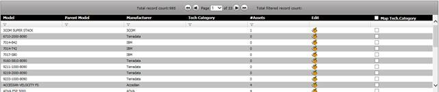
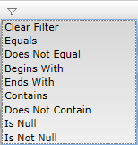
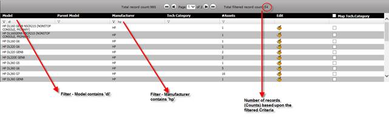

There are many screens in the application where the data is displayed in a grid like structure such as site, location etc. Most often and especially if the list is long it may go over few pages. To look for a particular record in the list, there is a search feature available for the grid columns, by which, user can filter the desired records easily. Given below is an example of the Model page:

Figure 13: Grid Filter
Notice that for each column, there is a Symbol. Once you click that Filter symbol, it opens a small search criteria window where one can specify the search criteria for that column as below:

For example, if one wants to search the models for the manufacturer that contains the name ‘HP’, them one can apply filter on the Manufacturer Column Contains ‘HP’ and the list will filter only those records.
One can also apply multiple filters – such as Manufacturer contains ‘HP’ and then Model contains ‘dl’ – in this case it will show all the models that contains ‘HP’ and the model name containing ‘dl’. The resultant grid will look like this:

Figure 14: Grid Filter - Multiple Search Criteria
|
Copyright © 2019 Hewlett
Packard Enterprise,v5.2.
|